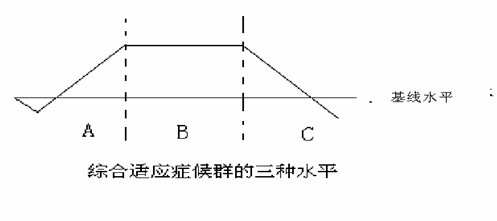

00:00
第八节 压力与健康
想一想：这些观点对吗？
1.我们必须降低生活中的各种压力。
2.压力只存在于我们的头脑中，并不能真正伤害我们。
3.压力实际上只是一种令人紧张和焦虑的力量，如果我们能够使自己平静下来，那么就不会受压力的影响了。
4.压力就是负荷过高，如工作任务太重或刺激太大。
本节重点
1.压力的定义
2.压力源的种类
3.压力的种类
4.适应压力的几个阶段
5.从压力源到临床相的过程
02:25
第一单元 从心理学角度看压力
一、压力的定义*
压力是压力源和压力反应共同构成的一种认知和行为体验过程；
压力反应包括主体觉察到压力源后，出现的心理、生理和行为反应。
压力过程不同程度地增强或降低主体的健康水平。
二、压力源的定义
三、压力源的种类*
按性质分类：
1.生物性压力源：直接影响生存与种族延续的事件，如躯体创伤、生理剥夺。
2.精神性压力源：直接影响正常精神需求的事件。
内在：认知结构、个性特征，如多疑、完美人格，易受暗示等。
外在：道德规范，如奖励，惩罚等。
3.社会环境性压力源：直接影响主体社会需求的事件。
（1）纯社会压力，如失恋、离婚、战争等。
（2）由自身状况造成的人际适应问题，如社交焦虑症。
注意：纯粹的单一压力源在现实生活中极少，必须把三种压力源作为整体来考虑。
想一想新兵入伍后可能的压力源？
08:08
生物性的
独生子女、气候变化、体能消耗、躯体疾病、饥渴（适应性训练中）、……
精神性的
内在：入伍动机、个人生活习惯、中学期间的个人经验
外在：表扬、批评、期望……
社会环境性的
纯社会性的：部队纪律约束、失恋、人际环境改变、单亲家庭………
自身的人际适应问题：社交焦虑、内向造成缺少朋友……
四、压力源的测量
社会再适应量表
日常生活中小困扰的测量
知觉压力的测评
五、压力的内省体验心理冲突
16:13
第二单元 压力的适应
一、压力的种类*
按强度分类：
1.一般单一性生活压力
需要努力去适应，而且其强度不足以使我们崩溃。
日常生活中无法回避，其结果不完全是负面的。
2.叠加性压力
（1）同时性叠加压力
同一时间内，有若干构成压力的事件发生。
（2）继时性叠加压力
两个公司职员的一天
时间 |
甲 |
乙 |
| 7:00 上班，塞车 |
打电话到公司，告知可能晚到，然后听音乐、听新闻广播。 |
不时向窗外张望，催促司机。 |
| 9:00 到达公司 |
在办公室做工作前的准备 |
接受上司批评 |
| 9：30 新任务 |
欣然接受，尽力去做（积极） |
认为故意刁难自己，尽力去做（消极） |
| 12:00 午休 |
小睡一会儿、散步 |
与朋友聚会 |
| 14:00 继续工作 |
精力充沛、继续工作 |
疲乏，工作效率下降 |
| 17:00 下班 |
完成工作 |
遭到批评 |
| 18:00 到家 |
心情愉快，喝茶，看报 |
心情烦躁，与家人冲突 |
20:24
事件相继发生，后继压力发生在前一个压力适应过程的第二或第三阶段。
叠加压力是极为严重和难以应对的压力，危害很大。
3.破坏性压力（极端压力）
如战争、自然灾害、遭受攻击、遭受生命威胁等。
（1）创伤后压力失调（创伤后应激障碍，PTSD）
（2）灾难症候群（DisasterSyndrome）
三个阶段：
惊吓期：对创伤和灾难丧失知觉，往往事后不能回忆。
恢复期：出现各种心理反应。
康复期：心理重新达到平衡。
战场疲劳症
第一次世界大战期间，心理学家发现所谓“战场疲劳症”，表现为“心理麻痹”，对外界 反应减少，情绪沮丧或过度敏感、焦虑、失眠等。
越战以后，将战场疲劳症纳入了“创伤后应激障碍”。
心理干预是必须的——针对破坏性压力
早期通过催眠暗示解除精神障碍，后来发现让受害者与他人（健康者或其他受害者）共处有利于缓解。
24:07
一战和二战的经验表明，诊断为“战斗神经症”会使士兵认为自己是真正的病人，可以逃 避战场，并且这种症状将会在军队中流行；而将应激反应区分为“战斗疲劳”和“战斗衰 竭”，则会使更多的士兵重返战场。
战斗应激反应
在生命安全感受到严重威胁时，创伤性应激反应是普遍存在的，即任何人都可能出现某种 精神异常反应。
这种战场上的精神异常其实质是战斗应激反应，与平时的精神疾病有着本质的区别。
例如：焦虑是军事应激的常见反应形式，由日常心理社会应激引发的重度焦虑障碍会导致社会 功能严重受损，无法坚持正常工作。
而战斗应激的现场研究表明，处于重度焦虑状态下的军事作业人员仍能完成大多数战斗任务， 某些过度的应激反应也可能只是暂时性的战斗能力丧失，通过即时干预可以恢复到适度状态。
二、压力的适应
（一）坎农（W.Cannon，1920）提出压力下的“战与逃”的反应，对心理学的贡献是对适应压力付出的生理学代价进行过详细描述。他通过一系列动物实验，证明在对付压力时，自主神经系统兴奋,为应对压力做准备，出现心跳、呼吸增快、血压增高、瞳孔增大、汗液迅速分泌等。
（二）塞利（H.Selye，1956）提出压力适应的三阶段*
27:21
1.适应压力的过程分为三个阶段：
（1）警觉阶段
发现了事件并引起警觉，同时准备战斗。
（2）搏斗阶段
全力投入对事件的应对，或消除压力、或适应压力，抑或退却。
（3）衰退阶段
消耗大量生理和心理资源，最后筋疲力尽。
统称为“一般适应症候群”（GeneralAdaptationSyndrome，GAS）

28:00
2.三个阶段的生理、心理和行为特征：
（1）警觉阶段
交感神经兴奋，呼吸、心跳加快、血压、体温升高、汗腺分泌加快。
（2）搏斗阶段
生理生化指标恢复，行为平复——被控制状态；
生理、心理资源被大量消耗；
个体变得敏感、脆弱。
（3）衰退阶段
压力持续存在，能量几乎耗尽，无法继续抵抗压力。